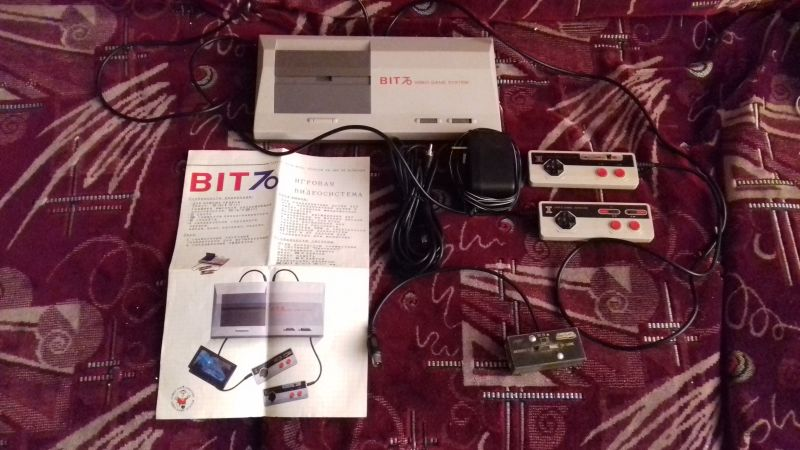

| Произведён | Август 1988 года |
| Процессор | UA6541( клон MOS 6502 ) - PAL |
| Зеленит | Нет |
| Встроенные игры | Нет |
| Количество слотов для картриджей | 1 |
| Стандарт картриджа | Японский Famicom 60 пинов |
| Звуковой процессор | Нормальный |
| Количество пинов геймпадов | 9 |
| АВ-выход | Работает |
| Антенный выход | Работает |
Bit 70 Video Game System
Bit. 70 Video Game System также известная как 創造者70( Креативный 70 ) - клон Nintendo Family Computer, сделанный тайваньской компанией Bit.Corp. ориентировочно в 1986-1987 годах. Известный экземпляр имеет заводской номер 5318 и выпущен в конце июля 1988 года. Выпускалась до 1992 года, до самого закрытия компании Bit.Corp.
В основном данная консоль имела местом хождения Тайвань, где и была разработана.
Ориентировочно в 1990-91 году продавалась в СССР, в сети магазинов "Березка", что косвенно подтверждается некоторыми свидетельствами и мануалом, имевшемся в комплекте на хорошем русском языке( с грамотной терминологией и переводом ). Вероятно компания разработчик планировала серьезно укрепиться на новообразовывающемся рынке - т.к. на момент начала 90ых видеоприставки были достаточно редким явлением, а компьютеры клоны ZX Spectrum нельзя считать полноценной игровой приставкой.
Изначально считалось, что клоны Famicom появились лишь после распада СССР, однако как оказалось и в позднем Союзе подобные приставки уже можно было купить ( правда цену покупки установить не удалось).
Таким образом данная приставка, можно сказать, одной из первых подобных появилась в России/позднем СССР. Она обогнала даже приставку "Денди", потому что последняя появилась в России только в конце 1993 года.
Комплектация приставки доставшаяся нам в музей была довольно слабой:
Консоль с двумя геймпадами
Мануал
Антенный кабель
Переключатель антенна\консоль
Блок Питания
Сама консоль по дизайну копирует собой Sega Master System первой ревизии, использует стилистику и цвета как на консоли NES, имеет несъемные два геймпада. Слот для переферии вынесен на заднюю панель, что довольно таки неудобно. На приставке имеется выход AV и RF выходы для подключения к телевизору.
Как и классический Famicom имеет несъемные геймпады без турбо кнопок, а на втором контроллере имеется микрофон. По дизайну изменены, являются более вытянутыми в ширину.
Сама приставка, в отличии от множества других фамиклонов, имеет не совмещенное PAL-NTSC железо, а в данном случае приставка сделана в чистом PAL, что немного повлияло на работоспособность некоторых игр на ней, и сделало возможным играть в игры европейского региона, которые на приставках совмещенного железа не работают корректно( Aladdin, The Smurfs, Asterix ).
Внутри используются следующие микросхемы:
UA6541 - Центральный процессор неизвестной фирмы изготовителя( имеется логотип, но по нему невозможно определить ), выпущен не раньше 11 августа 1988 года, если судить по маркировке. Является копией MOS 6502 PAL-региона.
UA6540 - видеопроцессор той же фирмы, что и ЦП, выпущен тогда же - в 1988 году, но позднее чем Основной Процессор - 25 августа 1988 года.
Оперативная память представлена двумя микросхемами UM6116-2, выпущенными 15-22 июля 1988 года
Также на плате используются две микросхемы фирмы Toshiba и ещё две от фирмы GoldStar
С приставкой также шел небольшой мануал, который был переведен на русский язык, при этом достаточно качественно.
Также имелся классический антенный переключатель, немного ржавый. Время не пощадило его, очевидно.
Сам антенный кабель для подключения, что тоже вообще говоря достаточно стандартная вещь для подобных приставок.
И имелся блок питания который отличается от других аналогичных тем что имеет ОБРАТНУЮ ПОЛЯРНОСТЬ. Такой нельзя использовать с приставками типа Dendy Classic и пр.
С консолью не шла с собой коробка, однако в гугле есть изображение как она должна была выглядеть.
Не было и комплектующего картриджа, что достаточно обидно.
Приставка совершенно спокойно работает по AV и по RF подключению, звук имеет удешевленный.
Вещь достаточно уникальная, если вдруг будет состоянием получше, смогу написать более развернуто о ней.
Также имеется видеообзор данной приставки с последующим её тестом:
https://www.youtube.com/watch?v=VKpJk1PgRKo